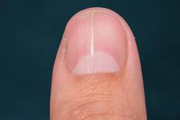
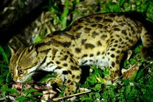

ナゾロジー
https://nazology.kusuguru.co.jp
身近に潜む科学現象から、ちょっと難しい最先端の研究まで、その原理や面白さを分かりやすく伝えられるようにニュースを発信していきます。最新の科学技術やおもしろ実験、不思議な生き物を通して、もう一度、皆さんの心にナゾを解き明かす「ワクワクの火」を灯したいと思っています。
フィード
「十分眠っている」と感じる人にも睡眠不足の疑い、自覚だけでは分からない
ナゾロジー
昼休み、机に伏せて5分。ゆうべは7時間寝たはずなのに、と首をひねる。 眠っている間のことは、ほとんど記憶に残りません。 だから睡眠の状態を正確に知るには、脳波のような客観的な計測が要ります。 ところが日常生活で睡眠を実際に測る手段は限られ、不眠症の診断は本人が「眠れない」と訴えるかどうかに頼っています。 筑波大学の研究チームは、睡眠健診を受けた421人の自宅での脳波と質問票の答えを突き合わせ、本人の自覚と医師の評価がどれだけ一致するかを調べました。 対象は日本の20〜79歳で、睡眠障害の治療を受けていない人。 結果、睡眠に不調を感じている人の66％は、客観的な計測で問題が見つかりませんでした。 逆に、十分眠れているつもりの人の45％には、睡眠不足の疑いがありました。 「睡眠の質」の自覚に、眠りの深さや短い覚醒、無呼吸のリスクをほとんど映していません。 自覚は、どこで客観と食い違うのでしょ…
3時間前

心不全、肝硬変、関節リウマチ――爪の根元の「赤い半月」に集まった70年分の報告
ナゾロジー
爪の根元にある、白い半月は意外な病気と繋がっているかもしれません。 米ラトガース・ニュージャージー医科大学（Rutgers NJMS）の研究者らは今回、1950年代から2025年までおよそ70年にわたり報告された爪の根元にある、白い半月が赤くなる赤い爪半月（そうはんげつ）の症例を集め、どんな病気と一緒に現れるのかを1本の論文に整理しました。 著者らは、全身の病気を背景に持つ赤い半月は、両手の複数の爪に左右対称に現れることが多く、親指でもっとも目立つと述べています。 では、なぜ体の奥の異変が、よりによって爪の付け根に現れるのでしょうか。 論文は2026年7月29日、医学誌『The American Journal of the Medical Sciences』にオンライン公開されました。
4時間前

絶滅寸前の「対馬のヤマネコ」に前例のない半分の尻尾――イエネコの痕跡はみつからず
ナゾロジー
日本の京都大学（KyotoU）などの研究チームが、対馬で通常の半分ほどの長さしかない尾をもつツシマヤマネコを見つけました。 ツシマヤマネコが属するベンガルヤマネコの仲間で短尾の個体が報告されたのは、把握されている限り初めてです。 しかも尾に異常のある個体は1頭ではなく、島内の複数地点で少なくとも3頭が確認されています。 研究チームがまず疑ったのは、同じ島で暮らすイエネコ（飼い猫）との交雑でした。 筆頭著者の松本悠貴氏は「珍しい見た目はすぐに交雑を疑わせますが、外見だけで結論を出す前に、ゲノムが実際に何を語っているのかを客観的に確かめたかった」と述べています。 短い尻尾は、本当にイエネコから持ち込まれたものだったのでしょうか。 研究内容の詳細は2026年8月5日に『Global Ecology and Conservation』にて発表されました。
5時間前

9000万年前の日本の海岸に「小型の草食恐竜」がいた、イグアノドン類の化石で判明
ナゾロジー
いわきの海沿いには、石を割るとアンモナイトが出てくる場所がある。その敷地から、恐竜の骨も出た。 イグアノドン類は、後期ジュラ紀から後期白亜紀にかけて世界に広がった植物食の恐竜です。 アジアと北米、ヨーロッパの間を行き来したことが、この仲間の多様化を形づくったと考えられています。 日本の化石も、その広がりをたどる手がかりになります。 ただし日本の記録には欠けが多く、多くは単離した歯や断片でした。 生態や多様性については、大事な問いが未解決のまま残ってきました。 研究チームが記載したのは、福島県で採集された1点の胸骨板（きょうこつばん、胸の骨）です。 拾われたのは1999年、いわき市アンモナイトセンターの敷地。 骨の大きさから、体長およそ3メートルの個体のものと推定されました。 日本の上部白亜系の海成層から見つかっていたイグアノドン類は、体長3メートルを超える個体のものとみられていました。 …
8時間前
オスなしで増える微小動物ヒルガタワムシ、染色体の修復を世代を超えて行っていた
ナゾロジー
コピーを重ねた書類は、いつか読めなくなる。オスを持たない生き物の設計図も、そうなるはずだった。 生き物には、切れたDNAをつなぎ直す相同組換え（そうどうくみかえ、同じ並びを持つ染色体を手本に、切れた場所を直す仕組み）があります。 有性生殖をする生き物では、この仕組みが減数分裂のときに染色体どうしを引き合わせ、遺伝子を子へ配る役目も担っています。 ヒルガタワムシの一種アディネタ・ヴァガは、オスを介さずに増えます。 DNAを傷つけるような過酷な環境に、並外れて強いことでも知られる動物です。 研究チームがこのワムシのゲノムを調べると、卵ができるときに、有性生殖と同じ型の組換えが起きていました。 その組換えは、DNAの傷を直すためにも使われていました。 壊れた染色体は一世代では直りきらず、世代を重ねながら少しずつ元に戻る。 研究チームはこの修復のモデルをBIHER（切断をきっかけに、相同な配列を…
11時間前
捨てれば「肥料になるプラスチック」を千葉大学が開発、分解物でコマツナが育った
ナゾロジー
弁当を包んでいたフィルムを丸めて捨てる。そのひとかけらは、たぶん自分より長く地上に残る。 プラスチックは長いあいだ、丈夫であることを目指して設計されてきました。 使い終えた後にどうなるかは、あまり考えられてきませんでした。 捨てられた分の多くは埋め立て地や野外に残り、海に出た分は細かく砕けた粒になって漂います。 ナゾロジーでは以前、スイスの土や水に年間200トンを超える微小なプラスチックが降っているという研究を紹介しました（スイスの土や水に年間200トン超の微小プラスチックが降る）。 千葉大学の青木大輔准教授らの研究チームは、使い終えた後に肥料へ変えられるプラスチックを開発しています。 今回は、その材料を柔らかくするための添加剤そのものを、使用後に肥料の成分へ変わるように設計しました。 引っ張って切れるまでに伸びる割合は4.3%から45.2%へ、10倍以上になりました。 できた分解物でシ…
14時間前
日光なしで生きられる「悪魔の花」と呼ばれる植物を発見
ナゾロジー
植物は光のほうを向く。そう習ってきたし、窓辺の鉢もそうしている。 ほとんどの植物は葉緑素という緑の色素を持ち、光のエネルギーを取り込んで自分の食べ物を作ります。 タイの森の暗い林床で見つかった小さな花は、その決まりごとから外れていました。 チュラロンコン大学とソンクラー大学の研究チームが、タイ西部で採った植物を新種として記載しました。 標本を採ったのは2025年5月、トンパープーム国立公園の標高930〜970mの林床です。 学名はThismia daemona、「悪魔の花」という呼び名も付きました。 Thismia属は妖精のランタンとも呼ばれ、いまおよそ120種が知られています。 この植物には葉緑素がなく、日光をエネルギーに使うことも、光合成で食べ物を作ることもできません。 代わりに、土の中で暮らす菌から炭素や栄養を受け取っています。 こうした生き方は、菌従属栄養(きんじゅうぞくえいよう…
15時間前
3か月間トマトペーストを食べたら「注意力と記憶力」が向上し脳も変化した
ナゾロジー
スペインのバルセロナ大学などの研究チームは、健康な中年の成人がトマトペーストを3カ月間毎日食べると、注意力と一部の記憶課題の成績が改善したと報告しました。 さらに、少人数で行った脳スキャンでは、脳の領域同士が連動するパターンにも変化の兆しが見つかりました。 さらに、一部の参加者の脳画像では、脳の各部分の活動が連動する様子にも変化の兆しがみられました。 注目されたのは、つながりが一様に強まるのではなく、一部では弱まっていたことです。 研究チームは、情報のやり取りが整理された可能性を考えています。 研究は2026年5月19日付の科学誌『Antioxidants』に掲載されました。
1日前
低所得の母親に現金を支給したら、赤ちゃんの老化指標が低くなった
ナゾロジー
家計の余裕は、赤ちゃんの「育ち方」だけでなく、「老い方」にも関わるのでしょうか。 ドイツのマックス・プランク人間発達研究所（MPIB）などで行われた「赤ちゃんの最初の数年間（Baby’s First Years）」という研究プロジェクトにより、低所得の母親への現金給付を増やすと、4歳の子どもで、生物学的な老化の速さを推定する指標が低くなることを報告しました。 比べたのは、毎月333ドル（5万円ほど）を受け取る家庭と、20ドル（3000円ほど）を受け取る家庭です。 違いをとらえたのは見た目でも体力でもなく、唾液に含まれるDNAについた化学的な目印でした。 生活を支えるお金が、幼い身体の内側にまで影響することを示す結果です。 研究は2026年9月8日、学術誌『Nature Human Behaviour』に発表されました。
1日前
ゾウが実験で見せた「自制心」は一部の人間よりも優れているかもしれない
ナゾロジー
米ニューヨーク市立大学の研究チームが、アジアゾウにも、ついやってしまう行動を抑えて別の方法に切り替える「自制心」があることを示しました。 自制心は感情を抑えたり欲を抑える以外にも「慣れた方法をつい繰り返してしまう」という部分を抑制するときにも発揮されます。 研究では、この人間にもある「慣れた方法」に流されてしまう部分をゾウたちが自制心によって回避する様子が示されています。 研究成果は、2026年9月9日付の学術誌『PLOS One』に掲載されています。
1日前